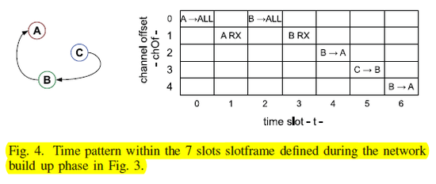
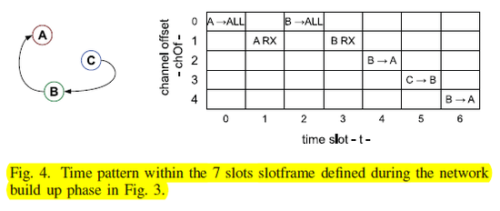

IEEE 802.15.4
- 2.4GHz대역의 16개 채널을 갖고 있음
- 하나당 2MHz(중심 frequnecy로부터 5MHz)
- 패킷 전송 절차 : Preamble -> SFD -> LEN
- 1) Preamble : 패킷을 전송하려고 할 때(시작 할때), 모든 무선 MAC(wifi 등)은 0101010...로 떤다(128us(마이크로sec)동안)
- Locking하기 위해서
- 2) SFD(Start of Frame Delimiter)
- Start of Frame을 구분하는 구분자(특정 ID)
- 패킷이 오는 것을 알 수 있다.
- 패킷이 아님. 패킷의 시작임
- ex) 01001 ...
- 3) LEN(Length)
- 8bit
- 패킷의 최대 길이는 128Bytes
- Receiver 입장에서 LEN을 읽은 후, 데이터가 어디서부터 언제까지 오는지 알 수 있다.
총 128Bytes 중 실제 데이터는 127Bytes(LEN까지 포함해서 128bytes)
- Once lockedoon, the receiver waits for the SFD, then for the length byte.
Power-Saving Link Layer - IEEE 802.15.4e
- Star Topology에서는 IoT의 모든 사물들을 커버하려면 빽빽히 AP가 있어야 한다. -> 너무 많이 있어야함
- 실제로 IoT는 AP에서 이어진 host들이 서로 연결되는 Mesh Network를 이루어야 한다.
- Wifi(AP) 입장에서는 Host가 두개의 Wifi를 붙이는 것을 허용안한다.
- 초기에는 패킷을 전달해주기 위해 연결다리에 있는 호스트는 무조건 켜져 있어야 했다.(100% duty cycle이어야만 한다.) -> Duty Cycle Management가 어렵다. -> 해결방법 : Time Slicing, Beconning(이전 포스트 내용)
- TSCH(Time Synchronized Channel Hopping)
- TSMP : 이미 표준으로 등록되어 있다.(WirelessHART standard)
Slotframe Structure
- Slotframe is a group of slots which repeat over time.
- Slotframe당 slot 4개
- 보내는 주기가 정해짐
- ex1) Host A가 5초에 한번, Host B가 10초에 한번, Host C가 20초에 한번씩 주기적으로 패킷을 전송할 때, 하나당 time slot을 20초로 잡아야 한다.(가장 긴 시간)
- ex2) 1초에 한번 보내면 timeslot 100개
- time slot 중 ACK의 시간 10ms(앞 포스트 Fig1.(b))
- sleeping slot에서는 라디오를 아예 보내지 않는다.
- 실제로는 time slot 굉장히 크다.
- Single slot은 충분히 길어야 한다. 10ms정도
- When an upper layer generates a packet, is sends it to the MAC Layer
- 전송 큐(transmist queue)에 넣고 보낸다.
- MAC Layer는 큐에 패킷이 있는지 검사한다.
- 있으면 패킷 보냄 -> ACK 기다림(ACK을 못받으면 dummy slot을 만들고 다시 전송)
- 없으면 다시 sleep
- reception slot은 radio를 키고 받고 끈다.
이 패러그래프 주제는 100% duty cycle 문제를 해결(duty cycle을 낮추기 위해)하기 위해 Multichannel hopping (Time Slotted Channel Hopping) -> 같이 깨고 같이 잘 수 있다.
Scheduling
- 두 가지 접근 방법 (centralized approach, distributed)
- Centralized approach : 혼자서
- 효율적인 스케쥴링이 가능하다.
- topology가 변하는 경우 re-form을 해줘야 함.-> distributed approach
- This type of approach has been commercially available since TSMP
- Distributed approach : 자기가 각각 결정함. 문제 발생 가능
Synchronization
- 802.15.4e에는 beacon이 없다.
- 두가지 방법
- Acknowledgement-Based synchronization : 보내는 host의 시간과 싱크 조절
- Frame-Based synchronization
Channel Hopping
- interference, multipath fading 완화시킨다
Network Formation
 
채널 A가 스케쥴링 관리(super, AP, Centralized)

채널 A가 스케쥴링 관리(super, AP, Centralized)
0번 slot은 advertising(default provisioning channel)
- A가 AP라고 advertise(Cycle 0번. (Fig.3))
- Fig.3의 k는 Cycle 횟수를 뜻함
- Cycle 0일 때(k=0)
- 1) time slot=0 (ASN=0)
- A가 Advertise
- 2) time slot=1 (ASN=1)
- B가 기다리고 있다 Join Request
- 1) time slot=0 (ASN=0)
- Cycle 1일때(k=1) : time slot 한바퀴 돌고 다시 처음으로 돌아온다.
- 1) time slot=0 (ASN=7)
- A가 B에게 Join Response
- 1) time slot=0 (ASN=7)
- Cycle 2일때(k=2)
- 1) time slot=0 (ASN=14) : Set Link
- t=2, chO=0, Adv : time slot=2, 0번 채널에 Advertise 설정
- t=3, chO=1 RX : time slot=3, 1번 채널에서 B RX 설정
- 1) time slot=0 (ASN=14) : Set Link
- Cycle 3일때(k=3)
- 1) time slot=0 (ASN=21) : Set Link
- t=4, chO=2, B->A : time slot=4, 2번 채널에 B->A 설정
- 2) time slot=2 (ASN=23)
- B가 Advertising
- 3) time slot=3 (ASN=24)
- B의 Advertising을 받고 C가 B에게 Join Request
- 4) time slot=4 (ASN=25)
- B가 C의 Request를 A에게 전달(B가 Centralized가 아니라서)
- 1) time slot=0 (ASN=21) : Set Link
- Cycle 4일때(k=4)
- 1) time slot=0 (ASN=28)
- A가 B에게 C의 Join Request에 대하여 Response 전달
- 2) time slot=2 (ASN=30)
- B가 C에게 Response 전달
- 1) time slot=0 (ASN=28)
- Cycle 5일때(k=5)
- 1) time slot=0 (ASN=35) : A가 B에게 전달
- t=5, chO=3, C->B : time slot=5, 3번 채널에 C->B 전달
- 2) time slot=2 (ASN=37) : B가 C를 세팅
- t=5, chO=3, C->B : time slot=5, 3번 채널에 C->B 세팅
- 이 order는 B,C둘다 전달 되어야함
- 1) time slot=0 (ASN=35) : A가 B에게 전달
- Cycle 6일때(k=6)
- 1) time slot=0 (ASN=42) : Set Link
- t=6, chO=4, B->A : time slot=6, 4번 채널에 B->A 설정
- 1) time slot=0 (ASN=42) : Set Link